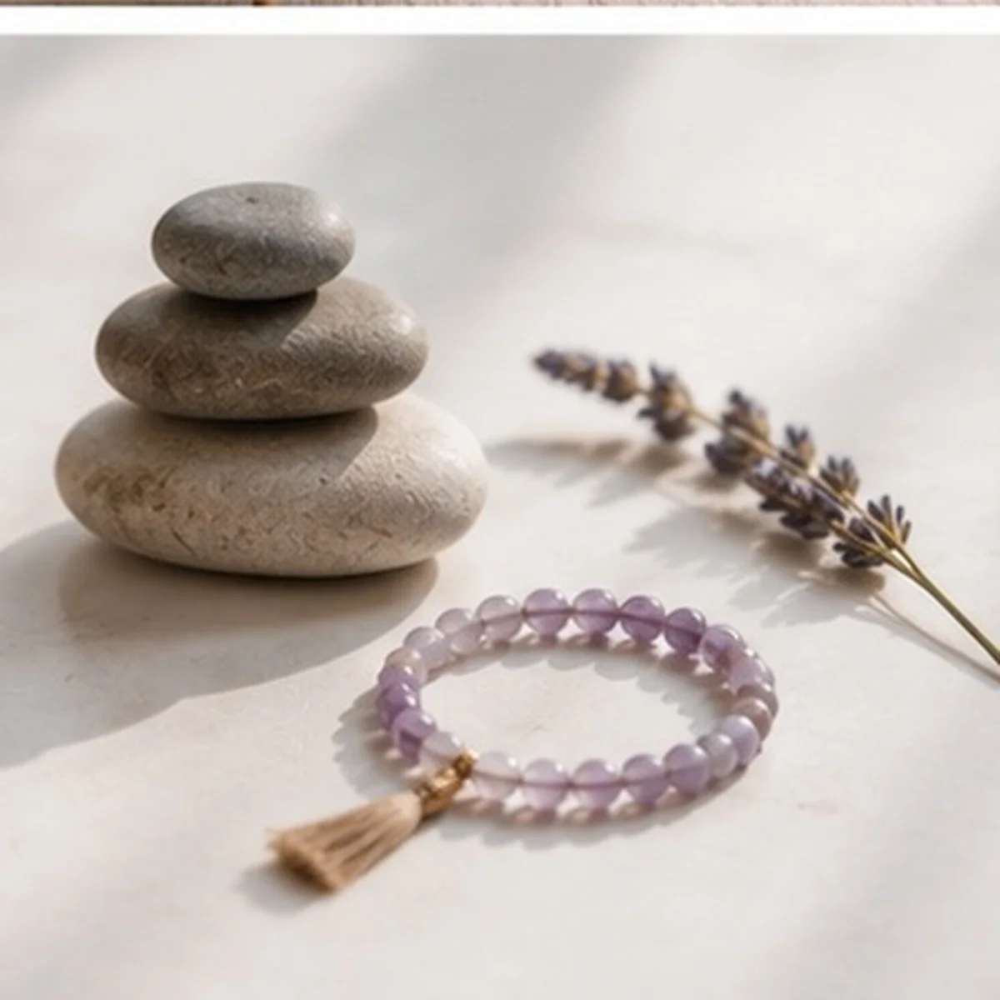
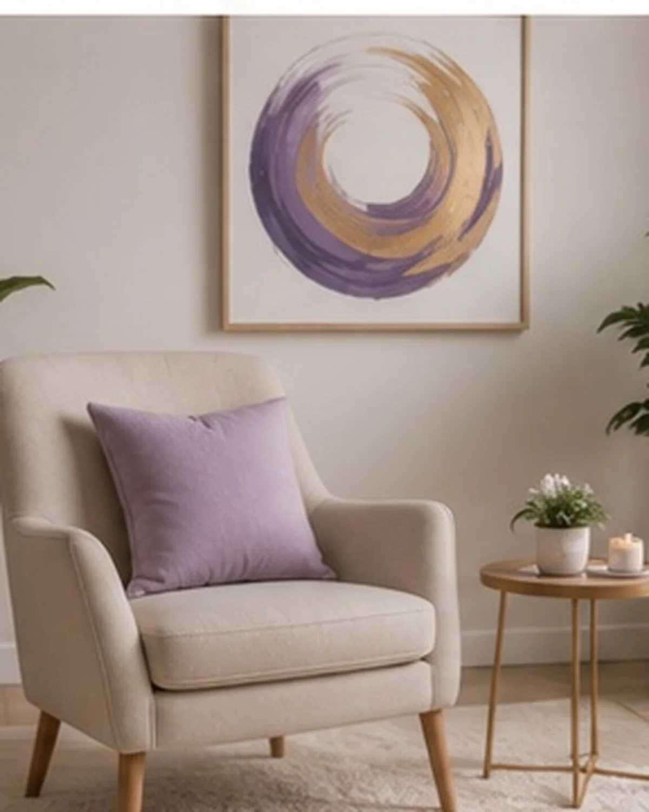

Sesión de TRG
El encuentro individual. Trabajamos sobre algo puntual que hoy te pesa, con consignas guiadas y atención a lo que aparece en el cuerpo. Es el punto de partida para la mayoría de las personas.
Consultar por una sesiónTerapia TRG · Mentorías · Coaching
Acompaño procesos con Terapia de Reprocesamiento Generativo: un método breve y guiado que trabaja con el cuerpo y la mente a la vez. Todo online, desde donde estés.
En qué te puedo acompañar
El encuentro individual. Trabajamos sobre algo puntual que hoy te pesa, con consignas guiadas y atención a lo que aparece en el cuerpo. Es el punto de partida para la mayoría de las personas.
Consultar por una sesiónUn camino más largo, con encuentros espaciados. Para quienes ya vienen haciendo un trabajo interno y quieren sostenerlo con alguien que acompañe el proceso a lo largo del tiempo.
Consultar por mentorías
Cuando hay un objetivo concreto y hace falta ordenar los pasos para llegar. Trabajamos sobre lo que querés lograr y sobre lo que se te interpone en el camino.
Consultar por coachingQué es la TRG
La Terapia de Reprocesamiento Generativo trabaja con el cuerpo y la mente al mismo tiempo. No se trata de hablar y hablar hasta encontrar la explicación: durante la sesión te doy consignas concretas y vamos registrando juntos qué se mueve mientras aparece aquello que te trajo a la consulta.
Es un trabajo activo. Yo guío, vos recorrés. Y todo pasa en un espacio donde no hay nada que justificar ni nada que rendir.
Para quién es
Cómo es una sesión
Scrolleá: así se ordena una sesión, de lo disperso a un solo punto.
centro
Contás qué te trae. Sin apuro y sin tener que ordenarlo antes de llegar: si viene desordenado, está bien.
Vamos al cuerpo. Dónde se siente, qué forma tiene, qué pasa cuando le prestás atención en vez de esquivarlo.
Acá entra el método. Con consignas guiadas trabajamos sobre eso que apareció, paso a paso, a tu ritmo.
Cerramos. Vemos qué cambió durante la sesión y con qué te vas, para que no quede nada abierto al colgar.

El espacio
El nombre del proyecto no es una metáfora suelta. Todos tenemos un lugar propio desde donde las cosas se ven más claras, y casi siempre el problema no es que no lo tengamos: es que nos alejamos.
Mi trabajo es acompañarte en ese camino de vuelta, con un método que tiene forma y con la paciencia de que cada persona lo recorre a su tiempo.
Escribime y charlamos
No hay que llegar a ningún lado nuevo.
Solo hay que volver.
Lo que cuentan
"Llegué sin saber bien qué decir y me fui con algo mucho más claro. Nunca sentí que tenía que explicarme."
"Me sorprendió lo distinto que es trabajar desde el cuerpo. Es otra cosa, y es más corto de lo que imaginaba."
"Las mentorías me dieron una continuidad que me faltaba. Saber que hay un encuentro por delante ordena mucho."
Testimonios de demostración — se reemplazan por devoluciones reales al pasar la web a producción.
Preguntas frecuentes
La Terapia de Reprocesamiento Generativo es un método breve y guiado que trabaja con el cuerpo y la mente a la vez. Durante la sesión te acompaño con consignas concretas para que puedas registrar qué pasa en tu cuerpo mientras aparece aquello que te trajo a la consulta.
Sí, todo el trabajo es online por videollamada. Solo necesitás un lugar tranquilo donde nadie te interrumpa, auriculares y buena conexión.
Depende de cada persona y de lo que quieras trabajar. La TRG se plantea como un proceso breve, pero la cantidad de encuentros la definimos juntos sobre la marcha, nunca de antemano.
No. Es un acompañamiento que puede sumarse a lo que ya estés haciendo, pero no reemplaza el tratamiento psicológico, psiquiátrico ni médico. Si estás en tratamiento, lo mejor es que lo converses con tu profesional.
En la sesión de TRG trabajamos sobre algo puntual que hoy te pesa. En la mentoría acompaño un camino más largo, con encuentros espaciados. En coaching el foco está en un objetivo concreto que querés alcanzar y en los pasos para llegar.
Empezar
Contame qué te está pasando y vemos juntos cuál de los tres caminos te sirve más. Sin compromiso y sin apuro.
Escribime por WhatsApp